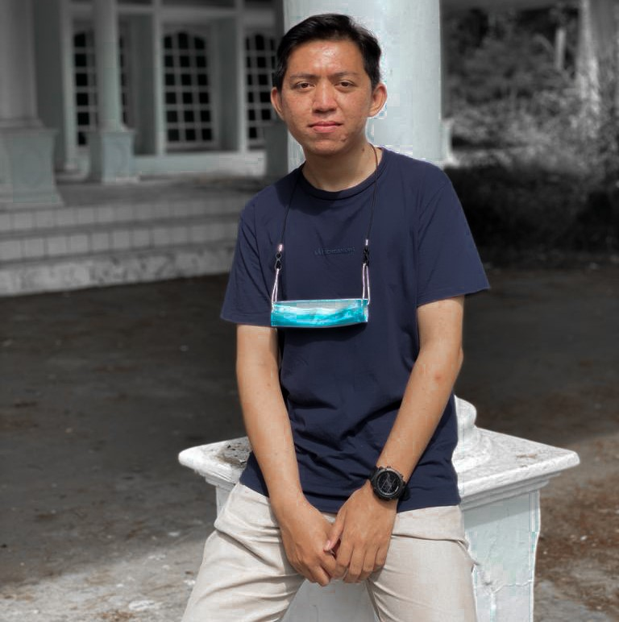
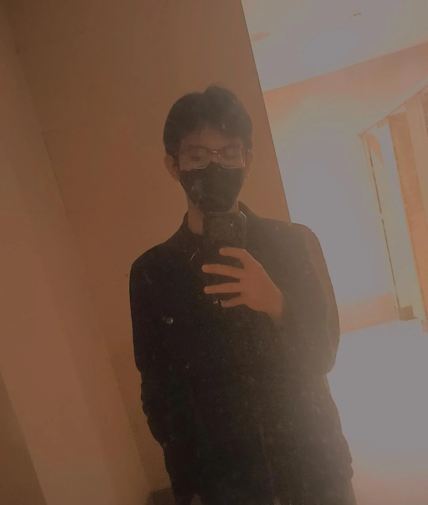
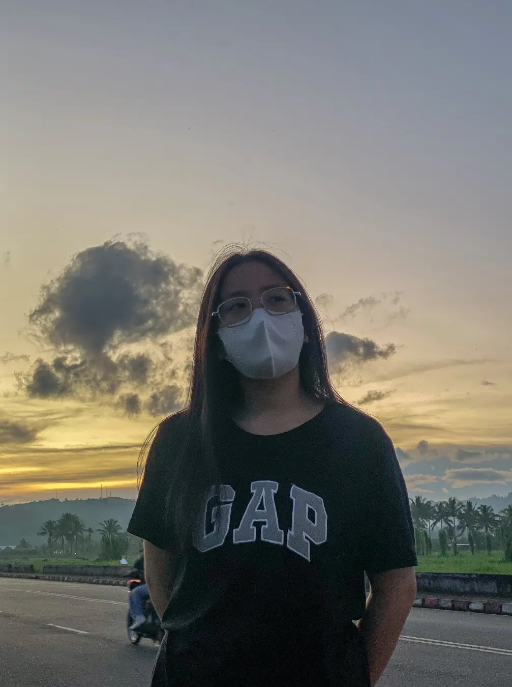
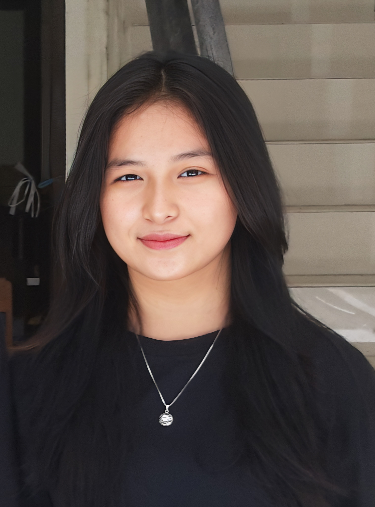
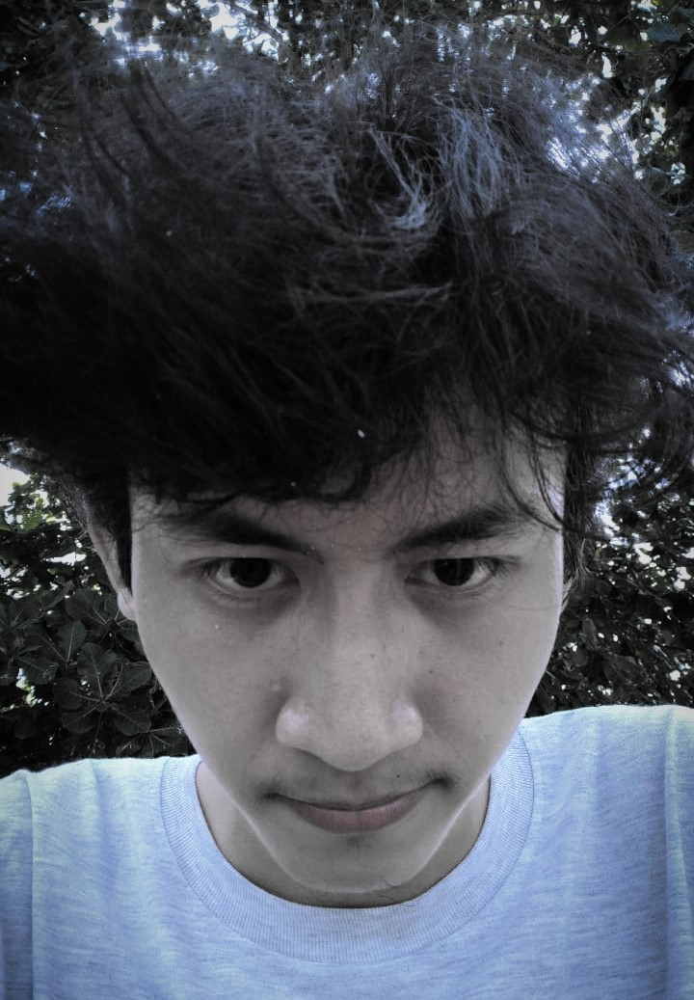
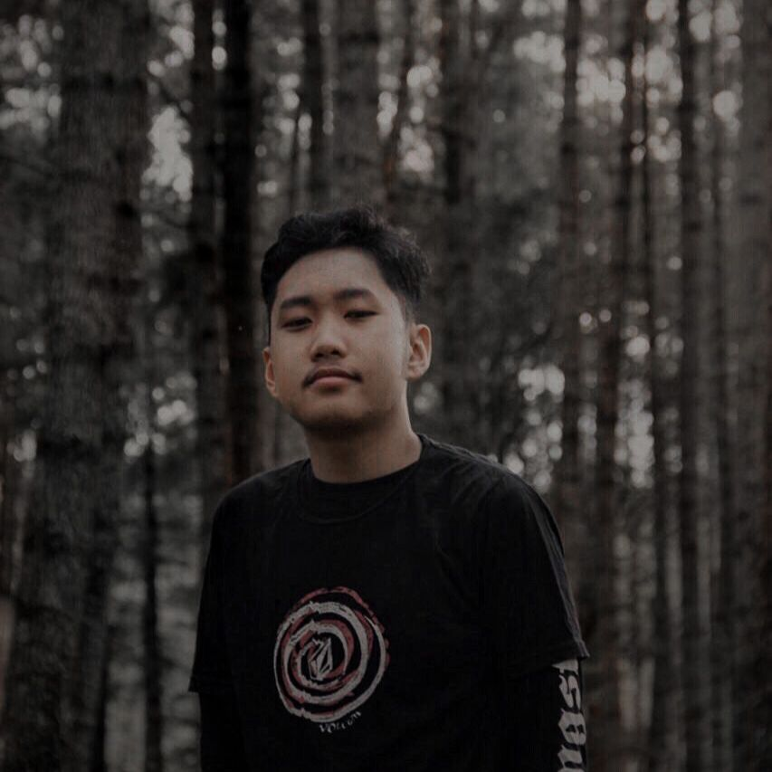

Profil Desa
Desa Wisata Palaes
Desa Palaes adalah desa yang terletak di Kecamatan Likupang Barat, Kabupaten Minahasa Utara, Provinsi Sulawesi Utara dengan luas wilayah kurang lebih 918,49 km². Penduduk yang menempati desa ini pertama kali datang pada tahun 1837 yang merupakan pindahan dari Tikala Ares. Dengan dikepalai oleh seorang bernama Israel Assah dan kedua putranya. Kemudian lama kelamaan mulai berdatangan penduduk pindahan lainya dari Tonsea dan sekitarnya.
Desa palaes memiliki batas wilayah sebelah utara yang berbatasan langsung dengan Laut Celebes, bagian selatan berbatasan dengan Desa Lumpias dan Teep Kasuratan Kecamatan Likupang Selatan, bagian timur berbatasan dengan Desa Maliambao dan Desa Werot Kecamatan Likupang Barat dan Selatan.
Desa Palaes memiliki potensi sumber daya alam dan manusia yang cukup tinggi untuk kelangsungan hidup masyarakat di desa palaes diantaranya mata air bersih yang digunakan masyarakat untuk kebutuhan sehari-hari dan juga Hutan mangrove yang dapat dijadikan tempat wisata sekaligus mata pencaharian untuk masyarakat desa palaes.
Desa Palaes memiliki struktur kepemerintahan dengan Hukum Tua sebagai pemimpin daerah. Saat ini, yang menjabat sebagai Hukum Tua adalah ibu Jeini G Morong S.Pd, MAP. Ada banyak prestasi yang sudah diperoleh oleh desa Palaes dibawah kepemimpinan ibu Jeini, salah satunya adalah masuk dalam kategori desa Brilian.
Peta Desa Palaes
Selangkah Maju Pasti Senang
Our Team
Kelompok HI FIVE

Andreas Turangan
210211060123

Leibniz Tumipa
210211060027

Meylani Moningkey
210211060006

Putri Sitorus
210211060033

Andrew Suadnya
210211060231
